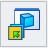
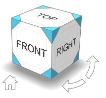

Sketching shortcuts
Keyboard shortcut keys and other tools are available to quickly change view direction, zoom, and rotation as you sketch.
Change view direction
In a part, sheet metal, or assembly document, you can use keyboard shortcut keys to change the view direction. This makes it easier to sketch on an existing model.
|
To look at this view |
Use these shortcut keys and commands |
|
Normal to the active sketch plane. (It also fits the sketch geometry to the window.) |
Ctrl+H Or use the Sketch View command |
|
Top view |
Ctrl+T |
|
Front view |
Ctrl+F |
|
Right view |
Ctrl+R |
|
Bottom view |
Ctrl+B |
|
Back view |
Ctrl+K |
|
Left view |
Ctrl+L |
|
Isometric view |
Ctrl+I |
|
Dimetric view |
Ctrl+J |
|
Trimetric view |
Ctrl+M |
|
Any predefined or named view in the gallery. |
 |
|
Select any view, angle, edge, or face on the fly. |
Click faces and corners on the Quick View Cube control.  |
 .
.Other sketching tips
Here are some other useful commands when sketching In a model document or a draft document.
|
To |
Use these shortcuts |
|
Draw a line symmetrically. |
Click a midpoint for the line and then press S. |
|
For synchronous sketches, you can use the steering wheel to manipulate sketch elements. |
|
|
Fit the view to the window. |
Double-click . |
|
Zoom in and out dynamically. |
Scroll . |
|
Zoom in. |
Ctrl+↑ |
|
Zoom out. |
Ctrl+↓ |
|
Zoom Tool (draft only) |
Alt+Z |
|
Rotate the model in the view. |
Press+ hold+circular motion. |
|
Cancel the command or operation. |
Esc |